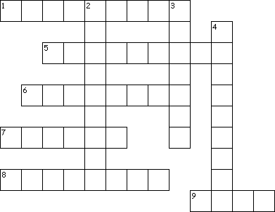

This week's lessons: Proverbs 31:10-31 and Psalm 1, or [Wisdom of Solomon 1:16-2:1, 2:12-22 or Jeremiah 11:18-20] and Psalm 54, James 3:13 - 4:3, 7-8a, Mark 9:30-37
Middle-School Pew-work ...Page 2
|
 |
How would you describe your ideal partner in life? Do you practice those behaviours yourself that you wish to find in someone else? __________________________________________________________________________________________________________________________________________________________________________________________________________________________________________________________________________________________________________________________________________________________________________________________________________________________________________________________________________________________________________________________________________________________________________________________ |
|
Across 1. Many _____ have done virtuously, 5. her of the _____ of her hands 6. ...she planteth a _____ 7. She openeth her mouth with _____ 8. Her _____ arise up, and call her blessed 9. ...She seeketh wool, and ______ |
Down 2. ...all her _____ are clothed with scarlet. 3. She layeth her hands to the _____ 4. Favour is _____ and beauty is vain |
|
Next Week:Esther 7:1-6, 9-10; 9:20-22 and Psalm 124 or Numbers 11:4-6, 10-16, 24-29 and Psalm 19:7-14, James 5:13-20, Mark 9:38-50